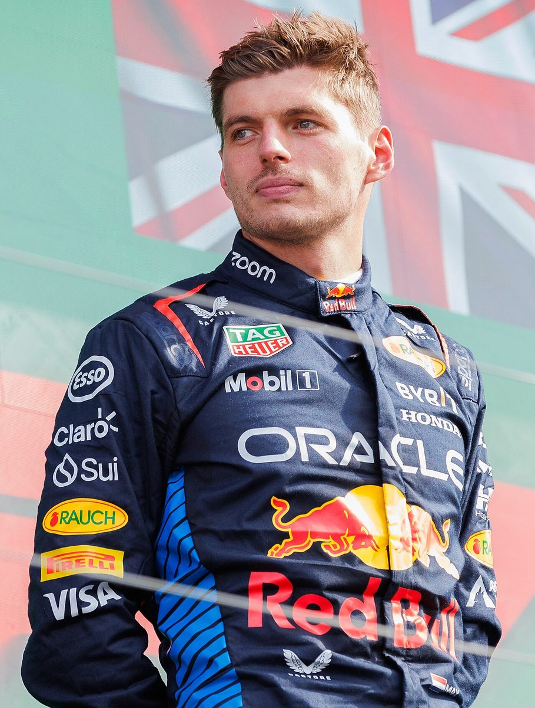

Mak
MMak is the founder and editor of Bang Sport Daily. Based in Phnom Penh, Cambodia, he has followed world sport for years and reviews every story before it is published.

Manny Pacquiao: The Street Fighter Who Conquered Eight Divisions
From sleeping on Manila pavements to winning belts across four decades, the Filipino icon built an unmatched legacy.

Svay Rieng and Phnom Penh Crown chase a historic AFC Champions League Two double
Svay Rieng arrive top of the Cambodian Premier League after a 5-0 win, while group leaders Crown carry poor league form into a decisive trip to Kuching

Bangladesh and Singapore finalize preparations ahead of December women's friendlies
Interim coach Eric Mare leads Dhaka camp while Lionesses name Umairah Hamdan captain for two-match series

From Middle-School Backup to 9.83 Seconds: The Life and Science of Su Bingtian
Overlooked for his height as a teenager in Guangdong, Su Bingtian rebuilt his starting blocks at 25 to become the first Asian-born sprinter under 10 seconds and an Olympic finalist.

Navajo Stirling Knocks Out Jiri Prochazka at UFC Qatar in Career-Defining Win
The unbeaten New Zealand light-heavyweight stopped the former champion with two seconds left in round two to move to 12-0.

Man Wei Chong and Tee Kai Wun End Malaysia's 27-Year Hong Kong Open Men's Doubles Title Drought
The Malaysian duo defeated Indonesia's Carnando and Marthin in straight games to claim their second BWF World Tour title of 2026.

Max Verstappen Wins Las Vegas Grand Prix as Russell Crash Sparks Post-Race Feud
Red Bull's four-time champion edges McLaren duo Norris and Piastri after late Mercedes drama settles a frantic 50-lap duel.

On This Day in 2013: Magnus Carlsen Dethrones Viswanathan Anand in Chennai
The 22-year-old Norwegian grandmaster secured a 6½–3½ victory in Game 10 to claim his first undisputed world chess championship.

Lauren Price Makes Welsh Boxing History With Shutout Win Over Michaela Kotaskova to Become Undisputed Champion
The Olympic gold medallist swept all three judges' cards 100-90 in Cardiff to collect every major welterweight belt.

Kevin Vallejos Targets Title Shot Ahead of Aljamain Sterling Clash at UFC Qatar
The Argentine contender says defeating the former bantamweight king in Doha should secure a championship date with Alexander Volkanovski.

The Boy from Madeira Who Rewrote Football: The Life and Legacy of Cristiano Ronaldo
From a tin-roofed home in Funchal and teenage heart surgery to five Champions Leagues and over 980 career goals

Vietnam Push Belgium to the Brink in Spirited 3-2 U-17 World Cup Debut
Wonder goals from Le Sy Bach and Chu Ngoc Nguyen Luc cannot prevent a narrow opening defeat to the European runners-up in Doha

Jiří Procházka and Navajo Stirling Make Weight Ahead of UFC Qatar Main Event
Both fighters hit 205 pounds on the scale in Doha ahead of Saturday’s light heavyweight clash at ABHA Arena.

Khabib Nurmagomedov's Path From the Dagestan Mountains to 29-0 MMA Perfection
Under the lifelong instruction of his father Abdulmanap, the lightweight champion dominated the UFC before fulfilling a promise to retire at his peak.

Khabib Nurmagomedov Rejects Jake Paul's $200 Million Offer for MMA Return
The undefeated former UFC lightweight champion insists money cannot motivate a comeback, reaffirming his retirement.

Svay Rieng Sweep Past Port FC 4-1 to Revive ASEAN Club Championship Hopes
Goals from Min Ratanak, Martins Júnior, Tiago Alves and Kwame Peprah seal a commanding Group B win in Phnom Penh

On This Day in 2022: Qatar Kicks Off First Middle East World Cup
Enner Valencia's opening-night brace launched a 29-day winter tournament that concluded with a record 172 goals and Argentina's third title.

Emma Hayes Names 23-Player USWNT Squad for World Cup Qualifying Campaign
A quarter-final victory over El Salvador on 27 November would seal the United States a berth at the 2027 Women's World Cup in Brazil.

Spartak and Metallurg Swap Four Forwards as Maltsev and Morozov Move to Magnitogorsk
Spartak Moscow sent Mikhail Maltsev and the rights to Ivan Morozov to Metallurg for Ruslan Iskhakov, Igor Nechaev, the rights to defenceman Vsevolod Komarov and financial compensation.

Paraguay Spoil Moriyasu's Farewell as Japan Lose 2-1 in Singapore
Juan José Cáceres and Gustavo Gómez scored for Paraguay at the National Stadium, and Shio Fukuda's late header was not enough in Hajime Moriyasu's 113th and last match in charge of Japan.

Michkov's Two Assists Help Flyers Edge Sabres 4-3 and Extend His Point Streak to Five Games
The 21-year-old Russian set up goals by Jamie Drysdale and Christian Dvorak, whose third-period strike won the game in Philadelphia.

Irish Boxer Lee Reeves Dies at 31, Three Months After Being Injured in a Fight in Dublin
Reeves was knocked out by Gary Cully in August and spent three months in a medically induced coma. His promoter, Queensberry, called him a role model and an inspiration to his community.

Alexander Volkov Signs a New UFC Contract as Talks on a Title Fight Begin
The 38-year-old Russian heavyweight agreed a multi-fight deal a month after beating Rizvan Kuniev at UFC 333 in Abu Dhabi, his manager said.

Vinícius Scores a 12-Minute Hat-Trick as Brazil Beat Singapore 7-0
Vinícius Júnior scored in the 9th, 15th and 21st minutes for his first international hat-trick, and Endrick, Estêvão and Rayan added goals at the National Stadium.

Cambodian Premier League: Better Clubs, Small Crowds. A Club-by-Club Look at How to Build Fans
Cambodian clubs are winning in Asia, yet league matches average about 1,300 spectators. Data on all 11 clubs, Angkor Tiger's rise in Siem Reap, and lessons from Japan and Thailand point to what each club can do.

Lin Dan: How 'Super Dan' Won Every Major Title in Badminton
He lost in the first round of his first Olympics, then won gold in Beijing and London, five world titles and all nine of the sport's major titles.

Stephen Thompson Retires With a Spinning-Kick Knockout at UFC 334
The 43-year-old ended a 16-year MMA career by stopping Charles Radtke in the third round at Madison Square Garden. Dana White said the UFC will test him for a commentary role.

Ignatova, Formerly Trusova, Takes a Second Grand Prix Silver and Closes In on the Final in China
The 2022 Olympic silver medallist finished second at Skate America a week after second place at the Cup of China, and is second in the standings with two events left.

Liaoning Win First Chinese Women's Super League Title With a Round to Spare
A 1-1 draw at home to Beijing in Shenyang settled the title, a year after Liaoning lost it on the final day to the same opponents.

Ten-Man England Beat Spain 3-2 in Madrid to Top Their Nations League Group
Kane, Konsa and White scored before Elliot Anderson's red card, and England held on to end Spain's 43-match unbeaten run.